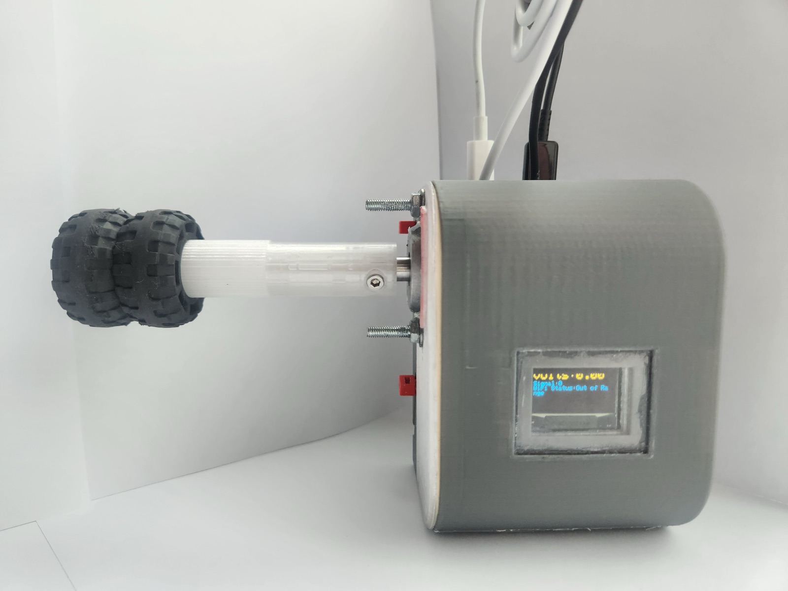
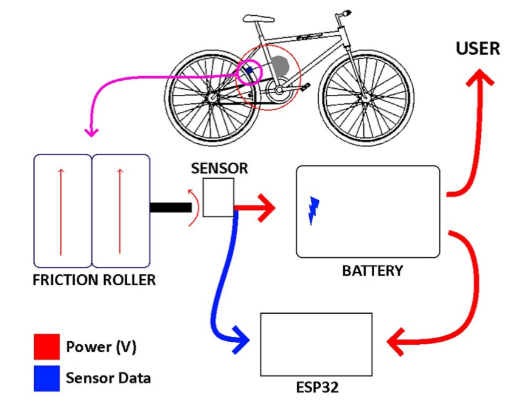
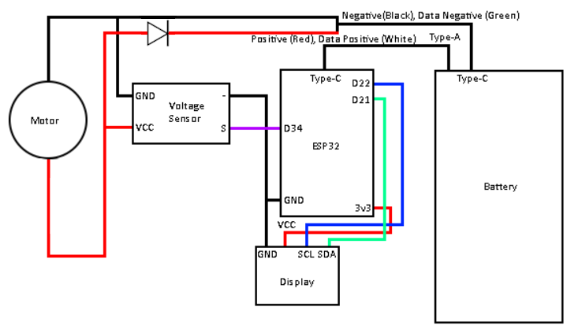
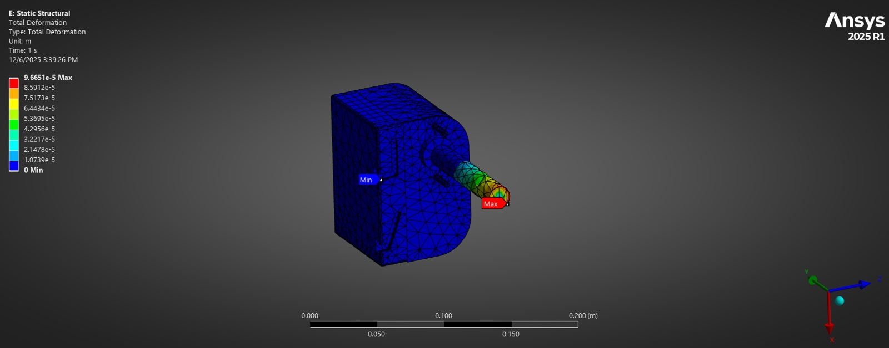
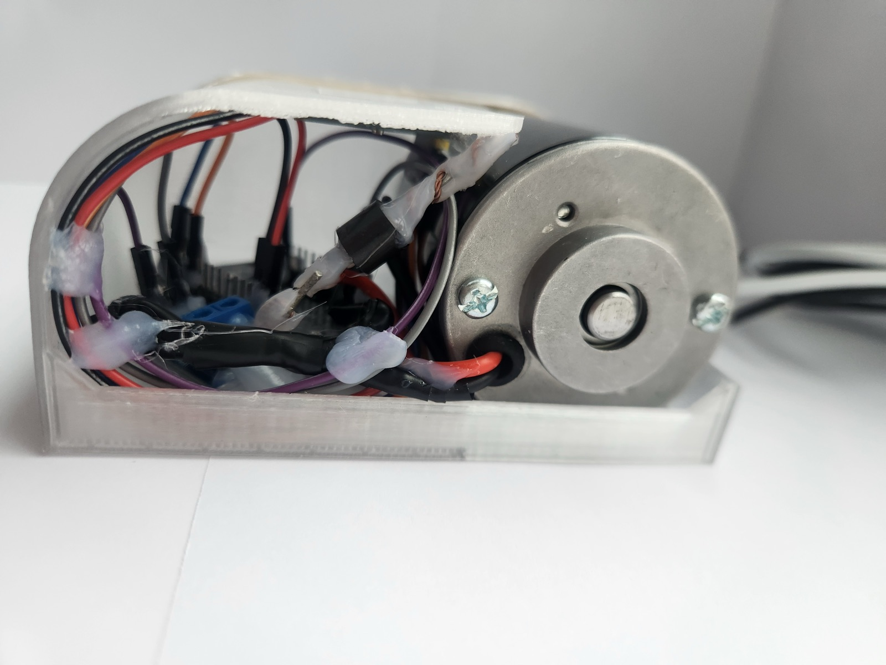
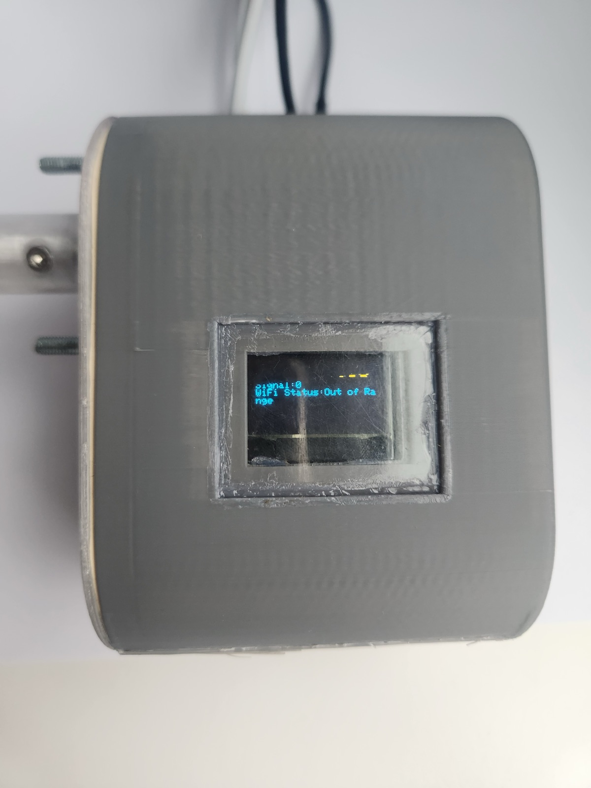
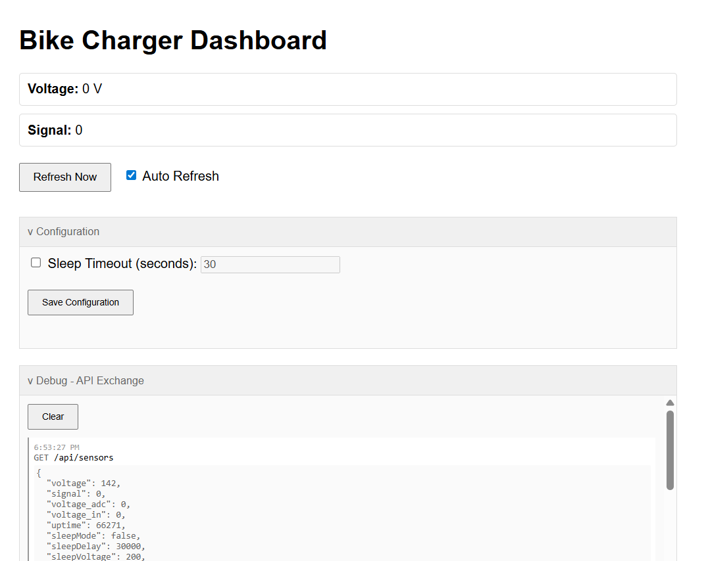

Human Powered Bike Dynamo
A bike-mounted generator that charges a removable battery pack while you ride, with live voltage on an OLED screen and a Wi-Fi dashboard.
- My role
- Project lead, from trade studies through the final build and test
- Team
- 4 students
- Dates
- Sep – Dec 2025 · UW ME 480
- Tools
- Fusion 360, ANSYS Mechanical, ESP32 (Arduino C++), 3D printing, soldering


- 5.65 Wat 10.4 mph (goal: 2.5 W at 10 mph)
- 7.55 Wpeak measured, at 14.7 mph
- 0.98 kgtotal mass (limit 1 kg)
- 17.9%of a 10,000 mAh pack per 2 h ride at 10 mph
The two power figures are measured ride data from the team's testing spreadsheet; the mass and charge estimate are from the six-pager.
The problem
Cyclists put out a lot of mechanical energy, and almost none of it is captured, especially when coasting downhill. Our goal was to turn part of that energy into useful electrical energy for charging a phone, without the rider noticing the device.
The ideal requirements were ambitious, so we cut them down to what we could build and test in ten weeks: generate a useful 5 V at 0.5 A (2.5 W) at 10 mph, weigh no more than 1 kg (about a full water bottle), add negligible drag, survive rain and rough terrain, mount on any standard adult bike without modification, and cost at most $50 to build.
My role
I was the project lead for our four-person team, taking the project from trade studies and requirements through the final build and testing. I also:
- Ran the ANSYS structural analysis of the housing and roller mount.
- Sized the roller-to-tire drive ratio to get as much energy out of the wheel as possible.
- Handled the electromechanical integration: motor, power conditioning, voltage sensing, ESP32, display, and battery, all packed into one printed housing.
Approach
1. Requirements
We wrote 17 "as needed" requirements, then revised each one into an "as offered" version that could actually be verified in ten weeks. A 5,000-mile durability goal became terrain and curb tests, two USB-C ports became one, and regenerative braking was dropped in favor of a removable battery that doubles as a normal power bank.
2. Architecture
A rubber friction roller rides on the rear tire and spins a small DC motor used as a generator. A Schottky blocking diode and a buck converter condition the motor's variable output before it reaches the battery pack. A voltage divider feeds the ESP32's analog input, and the ESP32 drives the OLED display and serves a dashboard over Wi-Fi.




3. Mechanical design and analysis
The housing is 3D-printed PLA with a removable insert that holds the electronics. The insert and the battery both hold by friction fit, so the battery slides out for normal use and the electronics come out for repair without tools. A rubber gasket seals the insert, sealant closes every other opening, and rubber pads at the mounts absorb vibration. It bolts to the water-bottle bosses, with optional zip-tie mounts for other frames. Every part was dimensioned and toleranced for an FDM printer.
For the FEA, the worst-case roller drag torque was only 0.3 N·m, so I applied 1 N·m of torque and 30 N of load, about three times the real values, to leave margin for edge cases. Peak stress in the PLA was about 1 MPa against a 30–60 MPa yield, and the steel motor shaft reached 8.6 MPa.




4. Firmware and dashboard
The ESP32 reads the generator voltage, animates the display while charging, and serves a small web dashboard with the live reading and settings. Below 0.2 V it counts down an adjustable timeout and goes to sleep, then wakes on its own when the rider starts pedaling. It also estimates the charge gained by subtracting its own ~1.65 W draw from the 0.5 A charging power and dividing by the pack's 37 Wh capacity, which works out to 17.9% after two hours at 10 mph.




5. Testing
We measured output on flat ground across ten rides at different speeds, logging speed from a phone fitness app. Power scaled linearly with speed, as the model predicted, and every ride at 5.32 mph or faster beat the 2.5 W goal.
Power output vs. bike speed
10 measured rides at 0.5 A charging current, with the model's prediction. Data: the team's testing spreadsheet; model: six-pager Figure A1.
- Measured
- Predicted: 0.5 A × (2.22 V per m/s × speed)
Show data table
| Speed (mph) | Voltage (V) | Power at 0.5 A (W) |
|---|---|---|
| 2.19 | 2.02 | 1.01 |
| 2.46 | 2.32 | 1.16 |
| 3.81 | 4.12 | 2.06 |
| 4.52 | 4.36 | 2.18 |
| 5.32 | 5.21 | 2.61 |
| 7.82 | 7.9 | 3.95 |
| 10.4 | 11.3 | 5.65 |
| 12.4 | 12.7 | 6.35 |
| 14.7 | 15.1 | 7.55 |
| 14.9 | 14.5 | 7.25 |
For durability, we rode the device on a mountain bike for about ten minutes each on pavement, dirt, and gravel, then rode up and down a curb ten times. The insert never loosened and the roller held the tire, slipping only rarely on dusty gravel. The one weakness: on the curb drops the housing shifted along its mounting slots, which tighter mounting screws would fix. A controlled water-pour test confirmed the seals kept rain out.
Results
| Requirement | Target | Result |
|---|---|---|
| Useful power at riding speed | 2.5 W at 10 mph | 5.65 W at 10.4 mph |
| Mass | ≤ 1 kg | 0.982 kg |
| Drag on the wheel | Wheel still spins freely | Met: 0.3 N·m worst-case roller torque |
| Weather | Sealed against rain | Met: gasket and sealant passed a water-pour test |
| Rough terrain | Pavement, dirt, gravel, curb with no damage | Partly met: no damage, but the housing shifted in its slots on curb drops |
| Universal mount | Standard adult bikes (not full suspension) | Met: mounted on an XXL road bike and an XL mountain bike |
| Battery feedback | Show the battery level | Partly met: shows charge gained instead, since the pack's internal electronics hide its true level |
| Cost to build | ≤ $50 | ~$50 in materials |
The power result is from the team's testing spreadsheet; the other results are from the six-pager.
The report also includes a business case in Amazon's six-page format: a $50 build cost and an $80 price, a 100-week production and cash-flow model, and sustainability, service, and delivery plans.
What we'd change next: add a heat sink for the buck converter, which ran warm on long rides; use the ESP32's deep-sleep mode to cut idle draw; switch to a grippier, longer-lasting roller material; and simplify the dashboard around the metrics riders actually want, like miles ridden.


Skills used
- Project leadership
- Requirements definition
- ANSYS static structural
- Fusion 360 CAD
- Design for 3D printing (FDM)
- Electromechanical integration
- ESP32 firmware (Arduino C++)
- Power conditioning
- Test planning and data analysis
- Business case writing